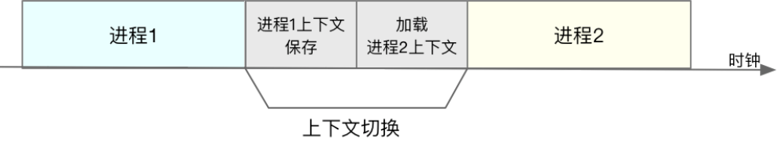

<!DOCTYPE html>
<!--[if IE 8]><html class="no-js lt-ie9" lang="zh-CN" > <![endif]-->
<!--[if gt IE 8]><!--> <html class="no-js" lang="zh-CN" > <!--<![endif]-->
<head>
  <meta charset="utf-8">
  
  <meta name="viewport" content="width=device-width, initial-scale=1.0">
  
  <title>CPU上下文切换 &mdash; yang docs  文档</title>
  

  
  
  
  

  

  
  
    

  

  <link rel="stylesheet" href="../_static/css/theme.css" type="text/css" />
  <link rel="stylesheet" href="../_static/pygments.css" type="text/css" />
    <link rel="index" title="索引" href="../genindex.html" />
    <link rel="search" title="搜索" href="../search.html" /> 

  
  <script src="../_static/js/modernizr.min.js"></script>

</head>

<body class="wy-body-for-nav">

   
  <div class="wy-grid-for-nav">

    
    <nav data-toggle="wy-nav-shift" class="wy-nav-side">
      <div class="wy-side-scroll">
        <div class="wy-side-nav-search">
          

          
            <a href="../index.html" class="icon icon-home"> yang docs
          

          
          </a>

          
            
            
          

          
<div role="search">
  <form id="rtd-search-form" class="wy-form" action="../search.html" method="get">
    <input type="text" name="q" placeholder="Search docs" />
    <input type="hidden" name="check_keywords" value="yes" />
    <input type="hidden" name="area" value="default" />
  </form>
</div>

          
        </div>

        <div class="wy-menu wy-menu-vertical" data-spy="affix" role="navigation" aria-label="main navigation">
          
            
            
              
            
            
              <p class="caption"><span class="caption-text">Linux</span></p>
<ul>
<li class="toctree-l1"><a class="reference internal" href="overview.html">Linux</a></li>
</ul>

            
          
        </div>
      </div>
    </nav>

    <section data-toggle="wy-nav-shift" class="wy-nav-content-wrap">

      
      <nav class="wy-nav-top" aria-label="top navigation">
        
          <i data-toggle="wy-nav-top" class="fa fa-bars"></i>
          <a href="../index.html">yang docs</a>
        
      </nav>


      <div class="wy-nav-content">
        
        <div class="rst-content">
        
          


<div role="navigation" aria-label="breadcrumbs navigation">

  <ul class="wy-breadcrumbs">
    
      <li><a href="../index.html">Docs</a> &raquo;</li>
        
      <li>CPU上下文切换</li>
    
    
      <li class="wy-breadcrumbs-aside">
        
            
            <a href="../_sources/linux/contextswitch.rst.txt" rel="nofollow"> View page source</a>
          
        
      </li>
    
  </ul>

  
  <hr/>
</div>
          <div role="main" class="document" itemscope="itemscope" itemtype="http://schema.org/Article">
           <div itemprop="articleBody">
            
  <div class="section" id="cpu">
<h1>CPU上下文切换<a class="headerlink" href="#cpu" title="永久链接至标题">¶</a></h1>
<div class="section" id="id1">
<h2>什么是CPU上下文<a class="headerlink" href="#id1" title="永久链接至标题">¶</a></h2>
<p>我们都知道，Linux 是一个多任务操作系统，它支持远大于 CPU 数量的任务同时运行。当然，这些任务实际上并不是真的在同时运行，而是因为系统在很短的时间内，将 CPU 轮流分配给它们，造成多任务同时运行的错觉。
而在每个任务运行前，CPU 都需要知道任务从哪里加载、又从哪里开始运行，也就是说，需要系统事先帮它设置好 <strong>CPU 寄存器和程序计数器（Program Counter, PC）</strong> 。</p>
<p>CPU 寄存器，是 CPU 内置的容量小、但速度极快的内存。而程序计数器，则是用来存储 CPU 正在执行的指令位置、或者即将执行的下一条指令位置。它们都是 CPU 在运行任何任务前，必须的依赖环境，因此也被叫做 <strong>CPU上下文</strong>。</p>
<p><strong>CPU 上下文切换</strong> ，就是先把前一个任务的 CPU 上下文（也就是 CPU 寄存器和程序计数器）保存起来，然后加载新任务的上下文到这些寄存器和程序计数器，最后再跳转到程序计数器所指的新位置，运行新任务。
而这些保存下来的上下文，会存储在系统内核中，并在任务重新调度执行时再次加载进来。这样就能保证任务原来的状态不受影响，让任务看起来还是连续运行。</p>
</div>
<div class="section" id="id2">
<h2>什么是任务<a class="headerlink" href="#id2" title="永久链接至标题">¶</a></h2>
<p>CPU 上下文切换无非就是更新了 CPU 寄存器的值嘛，但这些寄存器，本身就是为了快速运行任务而设计的，为什么会影响系统的 CPU 性能呢？
在回答这个问题前，先得搞清楚操作系统管理的这些“任务”到底是什么呢？</p>
<p><strong>进程和线程正是最常见的任务。但是除此之外，硬件通过触发信号，会导致中断处理程序的调用，也是一种常见的任务。</strong></p>
<p>所以，根据任务的不同，CPU上下文切换可分为几种场景：</p>
<ul class="simple">
<li>进程上下文切换</li>
<li>线程上下文切换</li>
<li>中断上下文切换</li>
<li>系统调用上下文切换</li>
</ul>
<div class="section" id="id3">
<h3>系统调用引起的上下文切换<a class="headerlink" href="#id3" title="永久链接至标题">¶</a></h3>
<p>Linux 按照特权等级，把进程的运行空间分为内核空间和用户空间，分别对应着下图中， CPU 特权等级的 Ring 0 和 Ring 3。</p>
<ul class="simple">
<li>内核空间（Ring 0）具有最高权限，可以直接访问所有资源；</li>
<li>用户空间（Ring 3）只能访问受限资源，不能直接访问内存等硬件设备，必须通过系统调用陷入到内核中，才能访问这些特权资源。</li>
</ul>
<p></p>
<p>由 <strong>系统调用</strong> 完成从用户态到内核态的转变。这个过程也会发生CPU上下文切换。</p>
<p>CPU 寄存器里原来用户态的指令位置，需要先保存起来。接着，为了执行内核态代码，CPU 寄存器需要更新为内核态指令的新位置。最后才是跳转到内核态运行内核任务。</p>
<p>而系统调用结束后，CPU 寄存器需要恢复原来保存的用户态，然后再切换到用户空间，继续运行进程。 <strong>所以，一次系统调用的过程，其实是发生了两次 CPU 上下文切换。</strong></p>
<p>不过，需要注意的是，系统调用过程中，并不会涉及到虚拟内存等进程用户态的资源，也不会切换进程。这跟我们通常所说的进程上下文切换是不一样的（系统调用在同一个进程里运行）。
所以系统调用过程通常称为 <strong>特权模式切换</strong> ，而不是上下文切换。但实际上，系统调用过程中，CPU 的上下文切换还是无法避免的。</p>
</div>
<div class="section" id="id4">
<h3>进程上下文切换<a class="headerlink" href="#id4" title="永久链接至标题">¶</a></h3>
<p>首先，进程是由内核来管理和调度的，进程的切换只能发生在内核态。所以，进程的上下文不仅包括了 <strong>虚拟内存、栈、全局变量等用户空间的资源</strong> ，还包括了 <strong>内核堆栈、寄存器等内核空间的状态</strong> 。
因此，进程的上下文切换就比系统调用时多了一步：在保存当前进程的内核状态和 CPU 寄存器之前，需要先把该进程的虚拟内存、栈等保存下来；而加载了下一进程的内核态后，还需要刷新进程的虚拟内存和用户栈。</p>
<p></p>
<p>根据 <a class="reference external" href="https://blog.tsunanet.net/2010/11/how-long-does-it-take-to-make-context.html">Tsuna</a> 的测试报告，每次上下文切换都需要几十纳秒到数微妙的 CPU 时间。这个时间还是相当可观的，特别是在进程上下文切换次数较多的情况下，很容易导致 CPU 将大量时间耗费在寄存器、内核栈以及虚拟内存等资源的保存和恢复上，进而大大缩短了真正运行进程的时间。这也是导致平均负载升高的一个重要因素。</p>
<p>进程上下文切换的时机</p>
<ul class="simple">
<li>进程所分配的时间片耗尽，就会被系统挂起</li>
<li>进程在系统资源（比如内存）不足时，需等待资源满足才能运行</li>
<li>进程调用如sleep等方法主动挂起</li>
<li>当有优先级更高的进程运行时，为了保证高优先级进程的运行，当前进程会被挂起</li>
<li>发生硬件中断时，CPU 上的进程会被中断挂起，转而执行内核中的中断服务程序。</li>
</ul>
</div>
<div class="section" id="id5">
<h3>线程上下文切换<a class="headerlink" href="#id5" title="永久链接至标题">¶</a></h3>
<p>线程与进程的一大区别在于， <strong>线程是调度的基本单位，而进程则是资源拥有的基本单位</strong> 。内核的任务调度对象是线程。而进程只是给线程提供了虚拟内存、全局变量等资源。
线程也有自己的私有数据，比如栈和寄存器等，这些在上下文切换时也是需要保存的。</p>
<p><strong>线程上下文切换可以分为两种：</strong></p>
<ul class="simple">
<li>前后两个线程属于不同进程。此时，因为资源不共享，所以切换过程就跟进程上下文切换是一样。</li>
<li>前后两个线程属于同一个进程。此时，因为虚拟内存是共享的，所以在切换时，虚拟内存这些资源就保持不动，只需要切换线程的私有数据、寄存器等不共享的数据。</li>
</ul>
<p>虽然同为上下文切换，但同进程内的线程切换，要比多进程间的切换消耗更少的资源，这也正是多线程代替多进程的一个优势。</p>
</div>
<div class="section" id="id6">
<h3>中断上下文切换<a class="headerlink" href="#id6" title="永久链接至标题">¶</a></h3>
<p>为了快速响应硬件的事件， <strong>中断处理会打断进程的正常调度和执行</strong> ，转而调用中断处理程序，响应设备事件。而在打断其他进程时，就需要将进程当前的状态保存下来，这样在中断结束后，进程仍然可以从原来的状态恢复运行。（关于CPU中断可参考​CPU中断​ ）</p>
<p>跟进程上下文不同，中断上下文切换并不涉及到进程的用户态。所以，即便中断过程打断了一个正处在用户态的进程，也不需要保存和恢复这个进程的虚拟内存、全局变量等用户态资源。中断上下文，其实只包括内核态中断服务程序执行所必需的状态，包括 CPU 寄存器、内核堆栈、硬件中断参数等。</p>
<p>对同一个 CPU 来说， <strong>中断处理比进程拥有更高的优先级</strong> ，所以中断上下文切换并不会与进程上下文切换同时发生。同样道理，由于中断会打断正常进程的调度和执行，所以大部分中断处理程序都短小精悍，以便尽可能快的执行结束。</p>
</div>
<div class="section" id="id7">
<h3>小结<a class="headerlink" href="#id7" title="永久链接至标题">¶</a></h3>
<p>CPU 上下文切换，是保证 Linux 系统正常工作的核心功能之一，一般情况下不需要我们特别关注。
但过多的上下文切换，会把 CPU 时间消耗在寄存器、内核栈以及虚拟内存等数据的保存和恢复上，从而缩短进程真正运行的时间，导致系统的整体性能大幅下降。</p>
</div>
</div>
<div class="section" id="id8">
<h2>如何查看系统CPU上下文切换情况<a class="headerlink" href="#id8" title="永久链接至标题">¶</a></h2>
<p>vmstat 是一个常用的系统性能分析工具，主要用来分析系统的内存使用情况，也常用来分析 CPU 上下文切换和中断的次数。</p>
<div class="code highlight-default notranslate"><div class="highlight"><pre><span></span>$ vmstat 5
procs -----------memory---------- ---swap-- -----io---- -system-- ------cpu-----
r  b   swpd   free   buff  cache   si   so    bi    bo   in   cs us sy id wa st
0  0      0 147112 237020 3158320    0    0     2    13    0    0  3  2 95  0  0
0  0      0 146908 237020 3158364    0    0     0    39 6688 15604  2  1 96  0  0
</pre></div>
</div>
<p>vmstat 只给出了系统总体的上下文切换情况，要想查看每个进程的详细情况，需要使用 pidstat，给它加上 -w 选项，你就可以查看每个进程上下文切换的情况了。</p>
<div class="code highlight-default notranslate"><div class="highlight"><pre><span></span>$ pidstat -w 5
Linux 4.4.0-33.bm.1-amd64 (n8-124-028)         11/29/2018         _x86_64_        (4 CPU)

09:08:53 AM   UID       PID   cswch/s nvcswch/s  Command
09:08:58 AM     0         1      0.20      0.00  systemd
09:08:58 AM     0         3      1.00      0.00  ksoftirqd/0
09:08:58 AM     0         7     77.25      0.00  rcu_sched
</pre></div>
</div>
<p>这个结果中有两列内容是我们的重点关注对象。一个是  cswch  ，表示每秒自愿上下文切换（voluntary context switches）的次数，另一个则是  nvcswch  ，表示每秒非自愿上下文切换（non voluntary context switches）的次数。这两种上下文切换往往代表不同的性能问题。</p>
<p><strong>自愿上下文切换和非资源上下文切换</strong></p>
<ul class="simple">
<li>自愿上下文切换，是指进程无法获取所需资源，导致的上下文切换。比如说， I/O、内存等系统资源不足时，就会发生自愿上下文切换。</li>
<li>非自愿上下文切换，则是指进程由于时间片已到等原因，被系统强制调度，进而发生的上下文切换。比如说，大量进程都在争抢 CPU 时，就容易发生非自愿上下文切换。</li>
</ul>
<p>一般而言</p>
<ul class="simple">
<li>自愿上下文切换变多了，说明进程都在等待资源，有可能发生了 I/O 等其他问题；</li>
<li>非自愿上下文切换变多了，说明进程都在被强制调度，也就是都在争抢 CPU，说明 CPU 的确成了瓶颈；</li>
<li>中断次数变多了，说明 CPU 被中断处理程序占用，还需要通过查看 /proc/interrupts 文件来分析具体的中断类型。</li>
</ul>
</div>
</div>


           </div>
           
          </div>
          <footer>
  

  <hr/>

  <div role="contentinfo">
    <p>
        &copy; Copyright 2018, yangluo

    </p>
  </div>
  Built with <a href="http://sphinx-doc.org/">Sphinx</a> using a <a href="https://github.com/rtfd/sphinx_rtd_theme">theme</a> provided by <a href="https://readthedocs.org">Read the Docs</a>. 

</footer>

        </div>
      </div>

    </section>

  </div>
  


  

    
    
      <script type="text/javascript" id="documentation_options" data-url_root="../" src="../_static/documentation_options.js"></script>
        <script type="text/javascript" src="../_static/jquery.js"></script>
        <script type="text/javascript" src="../_static/underscore.js"></script>
        <script type="text/javascript" src="../_static/doctools.js"></script>
        <script type="text/javascript" src="../_static/translations.js"></script>
    

  

  <script type="text/javascript" src="../_static/js/theme.js"></script>

  <script type="text/javascript">
      jQuery(function () {
          SphinxRtdTheme.Navigation.enable(true);
      });
  </script> 

</body>
</html>